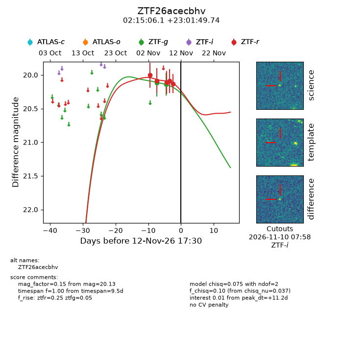
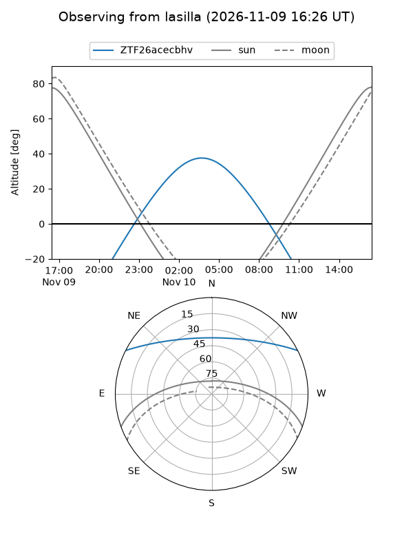
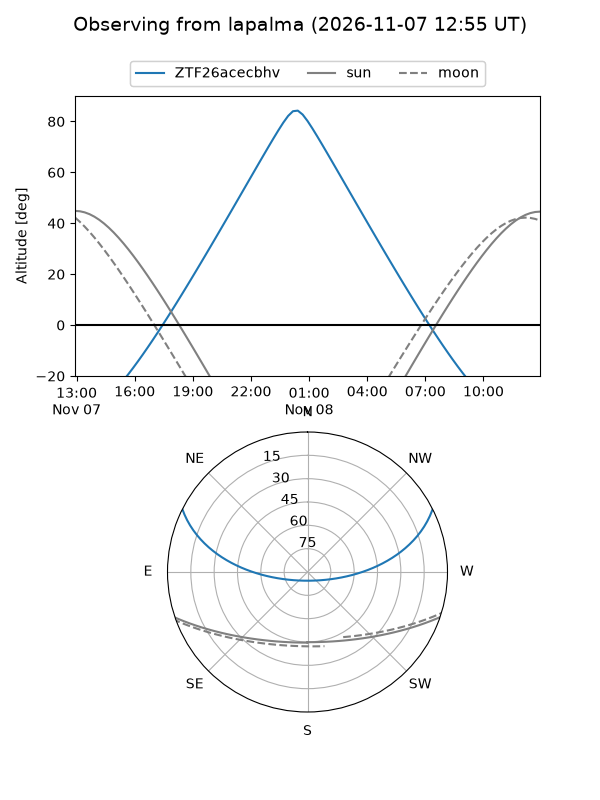
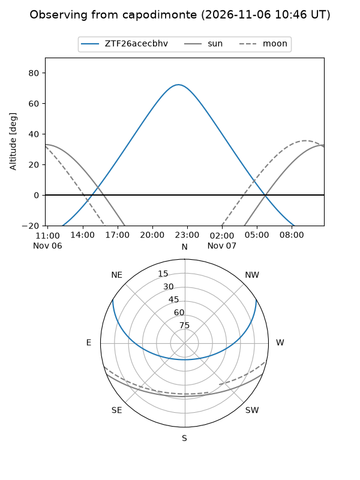
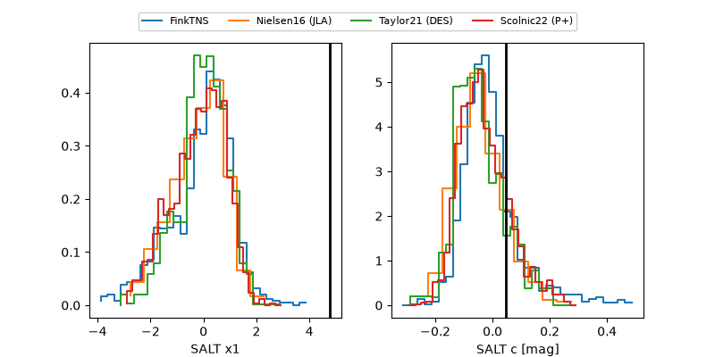

ZTF26acecbhv
Target ZTF26acecbhv at 2026-11-12 17:35
Aliases and brokers:
FINK-ZTF: ztf.fink-portal.org/ZTF26acecbhv
Lasair-ZTF: lasair-ztf.lsst.ac.uk/objects/ZTF26acecbhv
ALeRCE-ZTF: alerce.online/object/ZTF26acecbhv
Direct TNS query: direct search
alt names
ZTF26acecbhv (ztf,fink_ztf)
Coordinates:
equatorial (ra, dec) = 33.7755,+23.03048
equatorial (HMS+DMS) = 02:15:06.12,+23:01:49.74
galactic (l, b) = (146.8673,-35.92255)
Flags:
peak dt: +11.2
Photometry:
last ztfg=20.14, ztfr=20.13
2 ztfg, 5 ztfr detections
Lightcurve

Visibility



Additional plots
